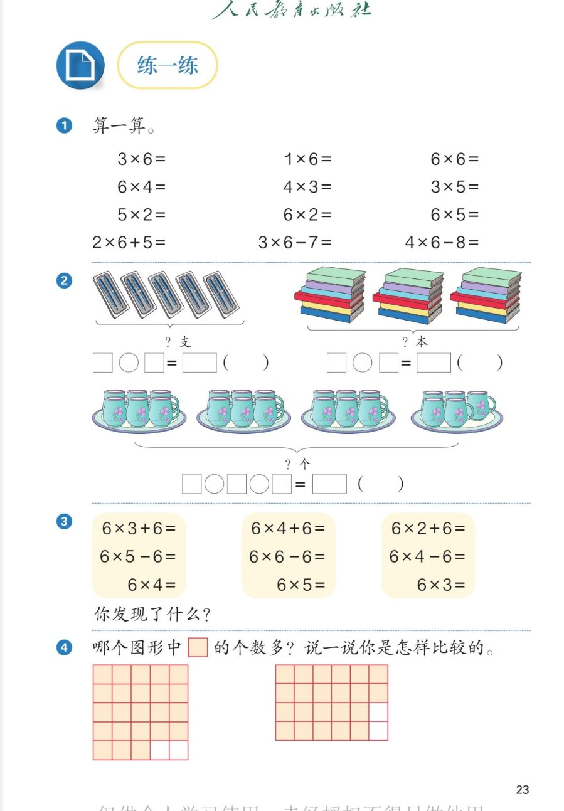

✏️ 1~6的表内乘法 · 课本第 23 页 · 练一练 1~4
人教版《数学》二年级上册 · 有声图文带读 · 先想后看解析
题数
6
认知
2
强化
3
拓展
1
本页重点
看图列式与规律发现
🎧 分两步学：
① 解析教材图片
——纯声音读图，读到哪一块哪一块闪动提示；关键处先倒计时让你思考，再在图片下方给出解析并朗读。
② 分层提问练习
——六道分层题（认知 / 强化 / 拓展），先思考再展开解析、朗读参考答案；这一步不再回到图片。
也可以随时点任意一句话、图上任意一块单独听；点课本文字卡还会展开答案。
教材图片（点块听读，读到哪块哪块闪）

📖 人教版《数学》二年级上册 · 课本第 23 页 · 图片仅供个人学习，版权归人民教育出版社所有
🤔 想一想（点我可跳过）
课本的文字（点句子：听读 + 看答案）
课本第 1 题
算一算：3×6、1×6、6×6、6×4、4×3、3×5、5×2、6×2、6×5、2×6+5、3×6-7、4×6-8
看答案 ▾
3×6=18
（三六十八）；
1×6=6
；
6×6=36
（六六三十六）；
6×4=24
；
4×3=12
；
3×5=15
（三五十五）；
5×2=10
；
6×2=12
；
6×5=30
（五六三十）；
2×6+5=17
（先算12再加5）；
3×6-7=11
（先算18再减7）；
4×6-8=16
（先算24再减8）。
课本第 2 题（笔）
5 个笔盒、每盒 2 支，一共几支？
看答案 ▾
列式：
5×2=
10
（支）或 2×5=10（支），口诀
二五一十
。
🌈 每盒同样多 → 用乘法
课本第 2 题（书）
3 摞书、每摞 6 本，一共几本？
看答案 ▾
列式：
3×6=
18
（本）或 6×3=18（本），口诀
三六十八
。
课本第 2 题（杯）
4 盘杯子：前 3 盘各 6 个，第 4 盘 5 个，一共几个？
看答案 ▾
列式：
6×3+5=
23
（个）。
先算乘：
6×3=18（3 盘同样多的），
再加
第 4 盘的 5 个 → 23。
🌈 每盘不一样多 → 乘加来帮忙
课本第 3 题
6×3+6、6×4+6、6×2+6；6×5-6、6×6-6、6×4-6；6×4、6×5、6×3。你发现了什么？
看答案 ▾
6×3+6=24
＝
6×4
；
6×4+6=30
＝
6×5
；
6×2+6=18
＝
6×3
；
6×5-6=24
＝
6×4
；
6×6-6=30
＝
6×5
；
6×4-6=18
＝
6×3
。
发现：
加 1 个 6，6 的个数
多 1
；减 1 个 6，个数
少 1
。
课本第 4 题
哪个图形中 ■ 的个数多？说一说你是怎样比较的。
看答案 ▾
左图：
每行 5 个、有 6 行，缺 2 个 → 6×5-2=
28
（个）
右图：
每行 6 个、有 4 行，缺 2 个 → 6×4-2=
22
（个）
比较：
28＞22，
左图多
。用"每行个数×行数，再减空格"来比，不用一个一个数！
分层提问练习（先想后看解析）
🔢
认知
口算：3×6、6×6、4×3 各得多少？想哪句口诀？
看解析
🤔 想一想
解析：
3×6=
18
，想"三六十八"
6×6=
36
，想"六六三十六"
4×3=
12
，想"三四十二"
🧮
认知
2×6+5 和 3×6-7 怎么算？先算什么？
看解析
🤔 想一想
解析：
2×6+5：先 12，再 +5 =
17
3×6-7：先 18，再 -7 =
11
💡 先乘后加减
🖼️
强化
第 2 题三幅图怎么列式？为什么第三个要用乘加？
看解析
🤔 想一想
解析：
笔：5×2=
10
（支）——每盒同样多
书：3×6=
18
（本）——每摞同样多
杯：6×3+5=
23
（个）——前 3 盘同样多，第 4 盘不同
💡 每份同样多才直接乘；有"多出来的"就用乘加
💡
强化
第 3 题"你发现了什么"？用一句说说道理。
看解析
🤔 想一想
解析：
6×3+6=6×4
：3 个 6 加 1 个 6 是 4 个 6
6×5-6=6×4
：5 个 6 减 1 个 6 是 4 个 6
💡 加 1 个 6，"个数"就多 1；减 1 个 6，就少 1
📊
强化
第 4 题哪个图形多？说说你的比较方法。
看解析
🤔 想一想
解析：
左图：6×5-2=
28
（个）
右图：6×4-2=
22
（个）
28＞22，
左图多
💡 乘减算总数，比大小不用逐个数
🌈
拓展
编一个"几个几再多几个"的生活问题，用乘加解决。
看解析
🤔 想一想
解析（开放题）：
示例：
1 盒鸡蛋 6 个，3 盒又多了 5 个 → 6×3+5=
23
（个）。
乘减也行：
每排 6 座、有 4 排，空 2 座 → 6×4-2=
22
（座）。
🌈 编得合理、算式正确都算对
① 解析教材图片
② 分层提问练习
⏹ 停止
纯声音 + 高亮跟随 · 想好才出解析
← 返回导航